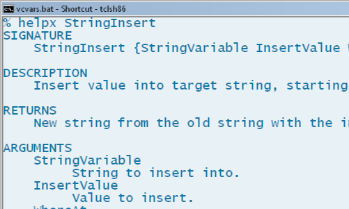

Helpx
Adding Docs to Your Tcl Apps
WARNING! This version of Helpx is in an experimental / pre-release state. You can try it out and give feedback, if you like.
One of the nicest features about Tcl is its command documentation. Likewise, the man pages for Linux can be very helpful and convenient. Would you like to add such features to your Tcl programs?
Helpx will let you generate HTML pages that look like the core Tcl documentation. Helpx also has a module that allows your users to pull up command documentation right from the Tcl shell.